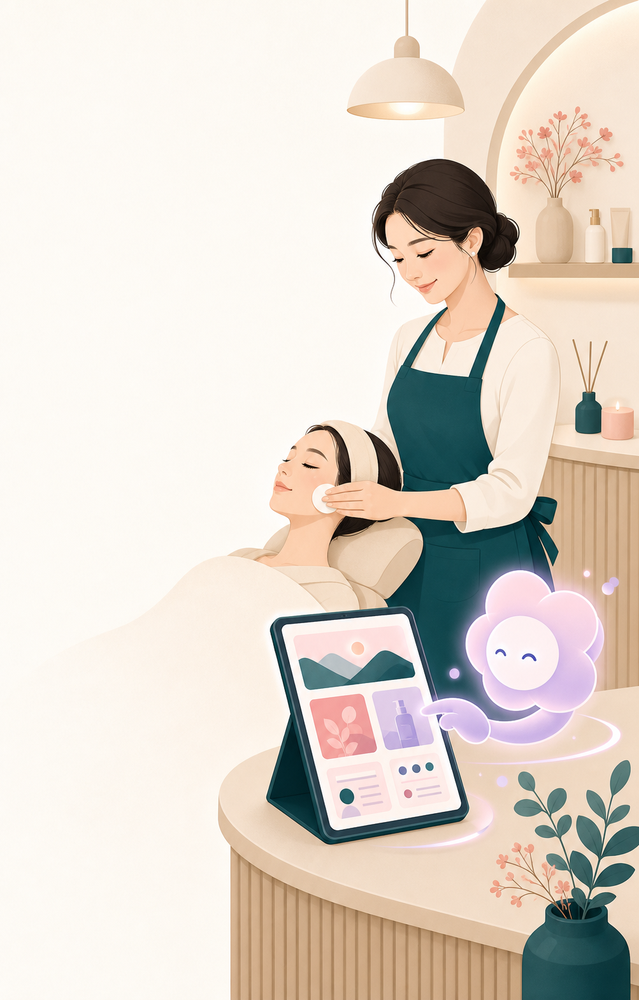

퇴근하려다 다시
인스타그램을 켭니다
시술 사진을 고르고 문구와 해시태그를 정리하다 보면 쉬어야 할 시간이 다시 업무가 됩니다.
게시를 미루거나, 결국 광고만 켜 두게 됩니다.
이 페이지는 인스타그램, 블로그, 플레이스, 당근과 반복 문의를 직접 운영하는 1인 뷰티샵 원장님을 위한 가설 검증 페이지입니다. 서비스 판매보다 먼저, 이 문제가 실제로 얼마나 자주 발생하는지 듣고 있습니다.

막연한 선호가 아니라 최근의 실제 행동과 경험을 묻습니다.
시술 사진을 고르고 문구와 해시태그를 정리하다 보면 쉬어야 할 시간이 다시 업무가 됩니다.
가격, 예약, 사진 상담과 민감한 질문이 섞여 원장님의 집중을 반복해서 끊습니다.
소희는 뷰티샵의 홍보 콘텐츠와 반복 문의를 돕는 운영형 AI 직원 아이디어입니다. 지금은 기능을 자랑하기보다 원장님이 이 문제를 정말 중요하게 느끼는지 검증하는 단계입니다.
완전 자동화가 아니라, 매장 기준을 먼저 배우고 원장님 승인 아래 반복 업무를 이어가는 방식입니다.
가격, 말투, 금지어, 인계 규칙과 채널별 운영 범위를 정합니다.
콘텐츠 초안과 반복 문의를 정리하고 민감한 상담은 원장님께 넘깁니다.
공식 게시 전 확인하고 승인한 업무부터 실제 채널로 확장합니다.
7개 문항, 약 3분. 이메일은 후속 인터뷰에 동의한 분께 연락하기 위한 목적으로만 사용합니다.
설문이 보이지 않으면 새 창에서 열어 주세요.
3분 경험 공유하기